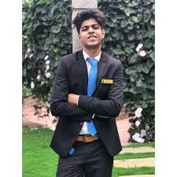

Armaan Bhati

Summary
A hotelier who is acquiring the techincal skills to get into the Information Technology Sector, like Web and Software Development.
Work Experience
RIU Hotels & Resorts, Dubai
Junior Receptionist - Nov., 2021-Jun, 2023
- Offering professional first impression to guests with friendly and positive approach.
- Listening to and patiently resolving minor complaints from guests.
- Providing quality service to all guests to ensure positive customer satisfaction.
- Maintaining a friendly behavior with all the team members to ensure full co-operation.
- Dealing with guests belonging to different nationalities and cultures.
Best Western Plus Pearl Creek Hotel, Dubai
Industrial Trainee - Jun,2018-Oct,2023
- Worked as a Trainee in all the four core departments of the hotel.
- Worked as Front Office Receptionist.
- Acquired knowledge of the Protel PMS System.
- Learned to maintain a professional and positive attitude.
- Learned to ensure customer satisfaction.
Education
- Bachelor of Hotel Management - Banagalore University (2016-2020)
- Senior Secondary - Bhartiya Public School (2016)
- Higher Secondary - Bhartiya Public School (2014)
Skills
- Believer of Teamwork
- Effective verbal and written communication skills
- Customer Service satisfaction
- Outgoing and positive attitude
- Customer complaints handling
Academic Activities
- Manager of Events of BHM Department, AMC College
- Led Front Office & Marketing Department of Annual Food Festival
- Led Front Office & Marketing Department of Monthly Theme Lunches
Other